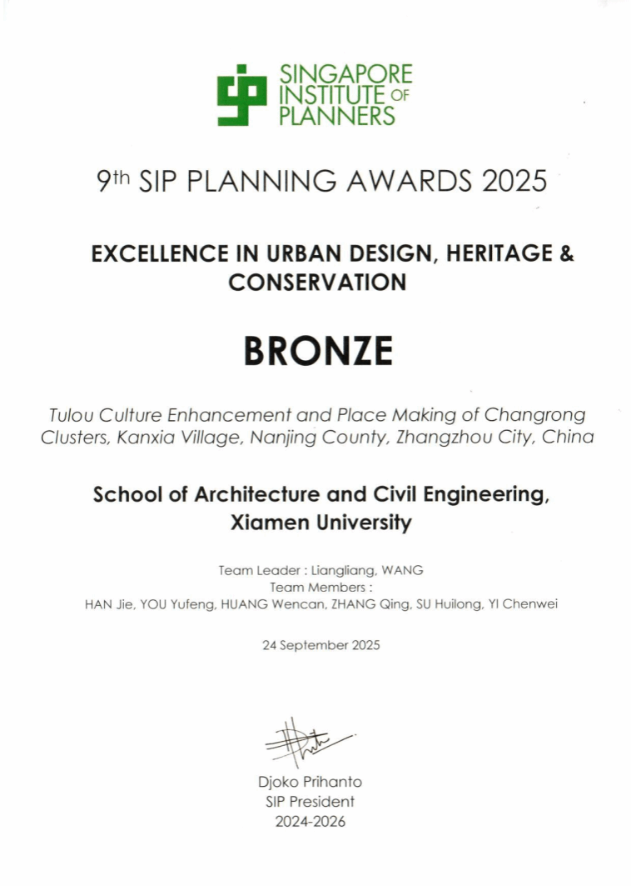
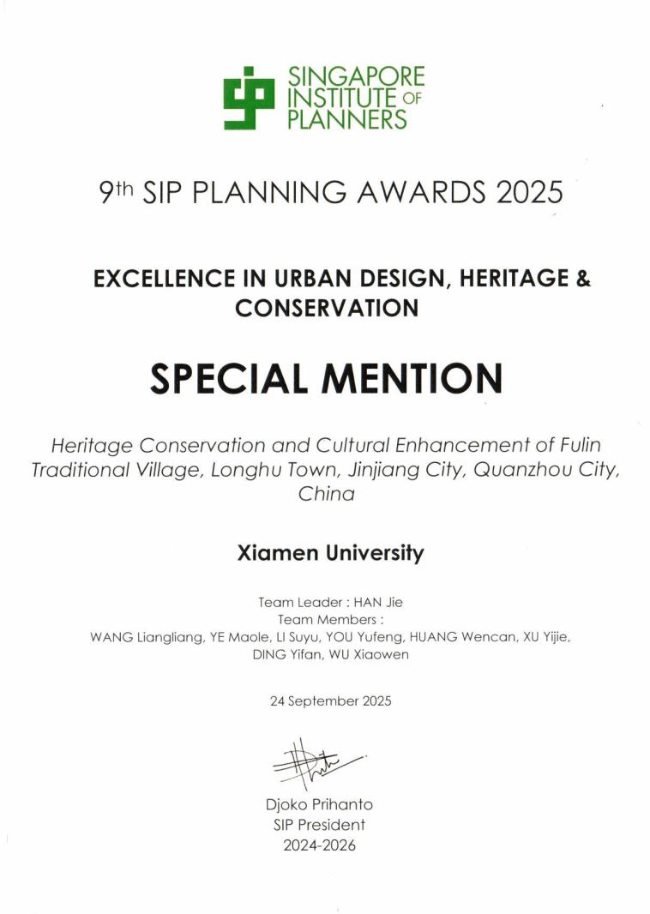
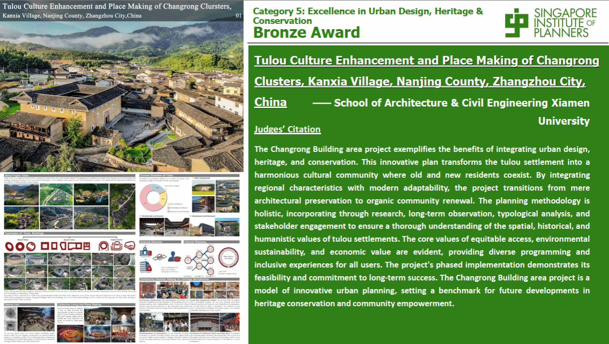
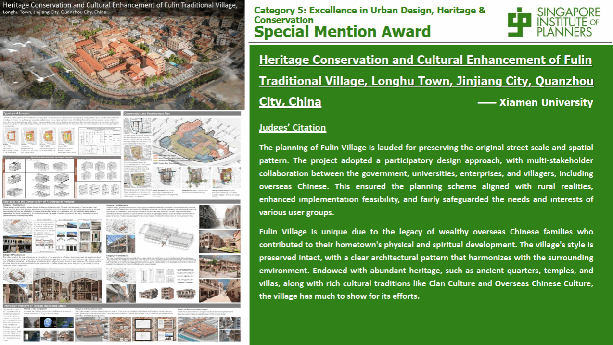

近日，新加坡规划师学会揭晓第九届新加坡规划师学会规划奖（SIP Planning Awards）获奖名单，由我校闽台非遗文化数字化保护与智能处理文化和旅游部重点实验室副主任王量量教授、成员韩洁副教授分别主持，建筑与土木工程学院多位师生共同参与的两项设计项目《漳州市南靖县坎下村长荣土楼群文化提升与场所营造》、《泉州市晋江市龙湖镇福林传统村落遗产保护与文化提升》分别获得“城市设计、文化遗产与保育卓越奖” 铜奖、特别提名奖。
 
关于新加坡规划师学会规划奖
新加坡规划师学会规划奖是亚太地区最具影响力的专业奖项之一。该奖项由新加坡规划师学会主办，自2008年起每两年评选一次，本届共设立包括卓越规划奖、城市设计、场所营造与公共空间卓越奖、城市设计、文化遗产与保育卓越奖等13个奖项类别，旨在表彰旨在表彰在城市规划、城市设计、可持续发展与创新设计领域做出杰出贡献的项目。
获奖项目信息
项目名称：漳州市南靖县坎下村长荣土楼群文化提升与场所营造
获奖情况：城市设计、文化遗产与保育卓越奖-铜奖
设计人员：王量量、韩洁、游玉峰、黄文灿、张晴、苏辉龙、易宸葳
评委会评语：
长荣土楼片区项目充分彰显了城市设计、遗产保护与文化传承相融合的价值。该创新规划将土楼聚落改造为新旧居民和谐共处的文化社区，通过融入地域特色与现代适应性，实现了从单纯建筑保护到社区有机更新的跨越。项目采用整体性规划方法，结合调研、长期观察、类型学分析及利益相关方参与，深入挖掘土楼聚落的空间、历史与人文价值。规划中清晰体现公平可达、环境可持续及经济价值等核心原则，为使用者提供多元功能与包容性体验。其分阶段实施策略既保障了项目可行性，也彰显了对长期成功的追求，堪称创新城市规划的典范，为未来遗产保护与社区赋能类项目树立了标杆。

项目名称：泉州市晋江市龙湖镇福林传统村落遗产保护与文化提升
获奖情况：城市设计、文化遗产与保育卓越奖-特别提名奖
设计人员：韩洁、王量量、叶茂乐、李苏豫、游玉峰、黄文灿、许一杰、丁一凡、吴晓雯
评委会评语：
福林村的规划因保留了原有街道尺度与空间格局而受赞。该项目采用参与式设计方法，由政府、高校、企业及村民（含华侨）多方利益相关者协作推进，既确保规划方案贴合乡村实际、提升实施可行性，也公平保障了各类使用者群体的需求与利益。福林村的独特性源于富裕华侨家族的历史积淀，这些家族曾为家乡的物质建设与精神发展作出贡献。村庄风貌保存完好，建筑格局清晰且与周边环境和谐相融，不仅拥有古街区、庙宇、别墅等丰富遗产，还承载着宗族文化、侨乡文化等深厚人文传统，其保护与发展成果显著。
